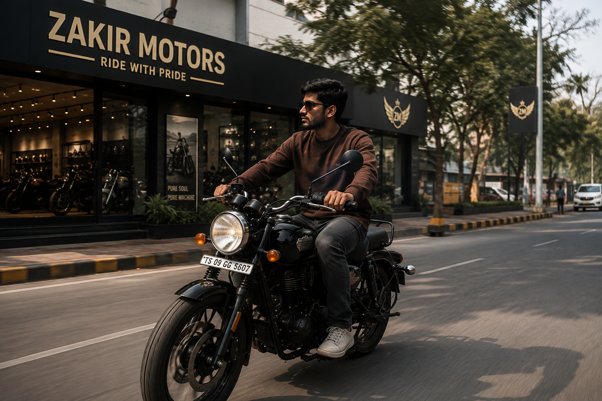
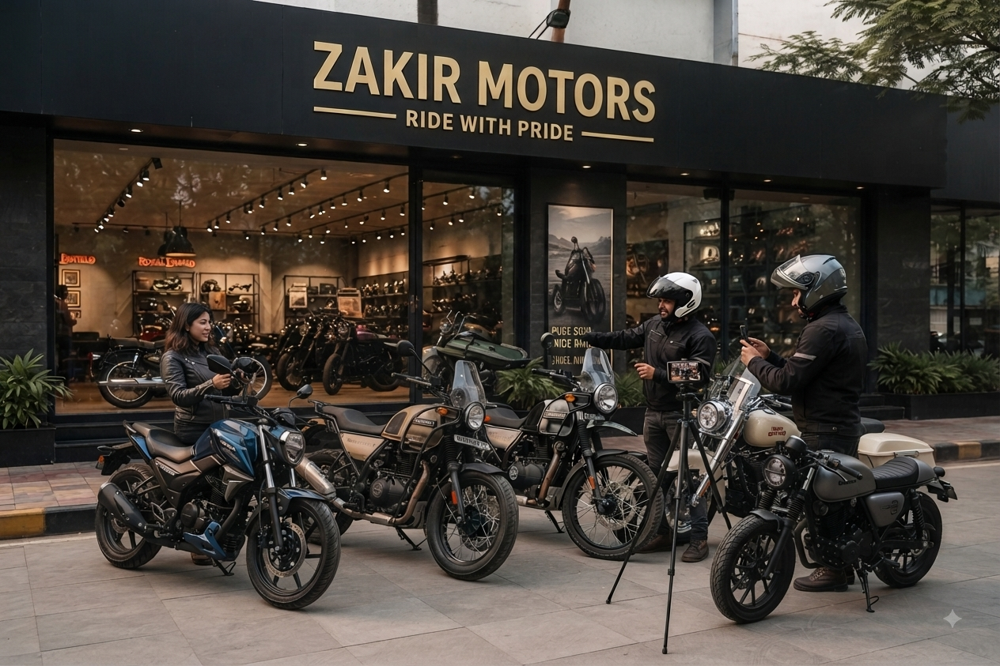
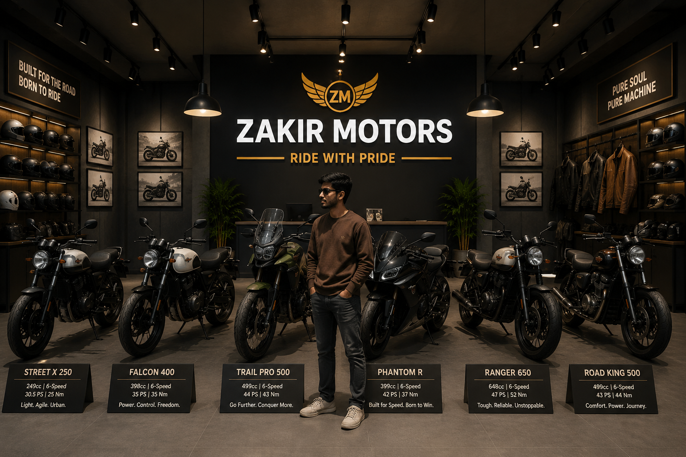

About the showroom
A rider's space, not just a place to buy a bike.
Zakir Motors is shaped around the way enthusiasts think about motorcycles: the sound, the stance, the details, the gear and the stories that happen after you leave the showroom.
Why Zakir Motors
Warm light. Dark steel. Machines with character.
The visual identity is intentionally close to the mood of your attached images: black, charcoal, cream and warm metallic gold. It feels premium without becoming flashy.
Our showroom philosophy is simple — present every bike clearly, keep the experience calm, and make the rider feel at home.

Rider culture
For people who never get tired of the road.
The attached community photo is used as a visual anchor for this section — it communicates the social side of riding, not just the machine.

